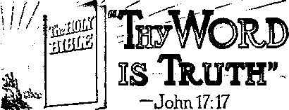
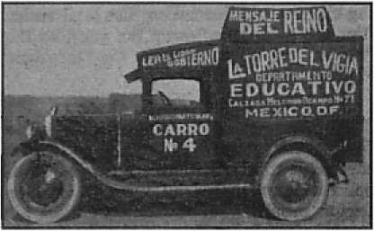
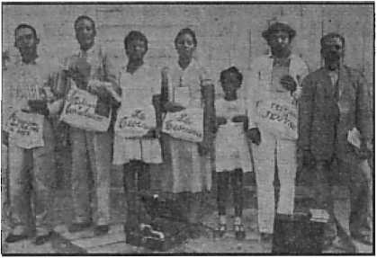
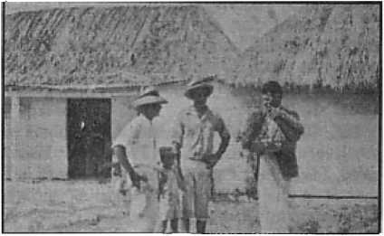

Supreme Court, by a one-man majority, stumbles a second time over the right of free worship
I
Only 144,001 will ever get to heaven at all
A narrative from the American Civil Liberties Union-News \
Intrigues in Africa
Five Cents'a Copy One Dollar a Year
$1.25 In Canada and Foreign Countries
Published Every Other Wednesday
Contents
California
Something Decayed in San Francisco
“The Kingdom News Supplementary”
“Thy Word Is Truth”
The New Government
Virginia Still Stands for Justice
Before the Seizure of Dutch East Indies
Presenting “This Gospel of the Kingdom”
Asia — The Railroad Across Iran
British Comment
Shameless Intrigues in South Africa
Northern Rhodesia Insults the Lord
Published every other Wednesday by
WATCHTOWER BIBLE AND TRACT SOCIETY, INC.
117 Adams St., Brooklyn, N. Y„ U. S. A.
Editor Clayton J. Woodworth
Business Manager Nathan H. Knorr
Five Cents a Copy
$1 a year In the United States $1.25 to Canada and all other countries
NOTICE TO SUBSCRIBERS
Remittances: For .your own safety, remit by postal or express money order. When coin or currency is lost in the ordinary mails, there is no redress. Remittances from countries other than those named below may be made to the Brooklyn office, but only by International postal money order.
Receipt of a new or renewal subscription will be acknowledged only when requested. Notice of Expiration Is sent with the journal one month before subscription expires. Please renew promptly to avoid loss of copies. Send change of address direct to us rather than to the post office. Your request should reach us at least two weeks before the date of issue with which it is to take effect. Send your old as well as the new address. Copies will not be forwarded by the post office to your new address unless extra postage is provided by you.
Published also in Greek, Portuguese, Spanish, and Ukrainian.
OFFICES FOR OTHER COUNTRIES
England 34 Craven Terrace, London, W.2
Australia 7 Beresford Road, Strathfield, N.S.W. South Africa 623 Boston House, Cape Town
Mexico Calzada de Melchor Ocampo 71. Mexico, D.F. Brazil Caixa Postal 1319, Rio de Janeiro
Argentina Calle Honduras 564S-48, Buenos Aires Entered as second-class matter at Brooklyn, N. Y., under the Act of March 3, 1879.
Notanda
Output of Planes
♦ During 1942 and 1943 the United States expects to produce nearly 100,000 warplanes, .and quite likely will achieve that result. This country doesn't do things by halves. Its builders of great dams and other stupendous projects often surprise the world by their repeated finishing of projects away ahead of time; sometimes as much as two years ahead. This country is now building warplanes; and that doesn’t mean maybe! Starting with 2,500 planes in 1939. it produced about 20,000 planes in 1941. Now the actual production in huge quantities is at hand, and the Axis powers are going to learn something. Further, American aviators beat the world, and before the war America had far and away the best air transport services beneath the sun. That ability and experience will now be put to use in war.
Bulletproof Tanks
♦ It seems almost incredible, but the gas tanks of American military planes are now all supposed to be bullet-proof. This does not mean that the bullets cannot penetrate them, but the tanks are lined with a substance which, even when perforated by a bullet, swells up and fills the holes and the gasoline does not spurt out, take fire and destroy the plane and its occupants. Actual shooting tests with machine guns and weapons of larger caliber are made every so often of tanks passing along the production line; so says the World-Telegram.
Glass Wings for Safety
♦ To cut down the risk of planes’ catching fire, an invention is perfected for covering all wooden parts with a cloth made of glass. The glass fabric does not shrink or stretch from moisture, does not rot, is lighter by half and is stronger than cotton cloths used for wing covering. It absorbs little rain or snow.
“And in His name shall the nations hope.”—Matthew 12:21, A.R.V.
Volume XXIII Brooklyn, N. Y., Wednesday, July 8, 1942 Number 595
Framing Mischief by Law
THE men of righteousness who founded the government of these United States fled from the hlood-soaked soil of continental Europe and England to the bleak shores of what was then called “The New World” and hewed out of the wild forests of this continent a new nation. They had experienced sharp loss of liberty, life and property through mischief framed by law in Europe. They endured many privations and much suffering to live here where they could have freedom to worship Almighty God according to the dictates of their consciences. From these emigrations and from rebellion against “The Old World” sprang these United States and the Constitution containing the present Bill of Bights. This document, together with the Declaration of Independence, according to Abraham Lincoln, dedicated the new government to the proposition that everyone within America’s gates should forever enjoy equal rights, which were declared to be inalienable and extended to all: rich or poor, religious or not, white or black, bond or free.
American democracy rests upon these fundamental rights and liberties. Such democracy shall continue only as long as these fundamentals are preserved, to be enjoyed equally by all. The least invasion of them by any department of the government should be promptly resisted and hurled back. Eternal vigilance is the price of liberty and of democracy in a world of scheming aggressors, who do not believe in “liberty and justice for all”. This is the more true when Democracy is under great pressure from totalitarians and when opportunists with a grudge and with ambitions for power and mighty position seek to use the situation to advance their aims, regardless of what it costs the people of the nation as a whole. Cautious of being detected as to their real aims, and with the belief that the unpopularity of a small organized group will justify and excuse them in the eyes of the majority of Americans for their camouflaged strike at right and freedom, the opportunists use their authority in a national crisis. Designedly they take action against a .helpless minority group without political pull and in disesteem with misinformed religionists and patrioteers. Real Americans, however, will not let any prejudices blind them as to what are the real issues at stake and as to what is being pulled off imperiling that which all. freedom-loving, God-fearing Americans hold most dear.
The majority decision of June 8 of the Supreme Court of this republic against such a minority group presents the most formidable challenge to intelligent Americans. Let them ask themselves, By this decision shall the freedom to voice and publish opinion in this land be gradually strangled? By this opinion shall there be an establishment of religion in a nation committed to separation of state and religion? Shall this decision stand as a prelude of what to expect in the postwar new order of the association of United Nations? If so, then the postwar order is doomed, because this decision strikes not only at human institutions, but against Heaven itself and its Ruler.
May the protest already raised in various fields of opinion and national interest not die out, but increase in volume and power and make itself felt with those who are but the official servants of the people of a democracy. To this end, read herewith the historic functions of that highly respected Supreme Court and, further, read how by a mere majority of one it has launched off on a course that should rouse all lovers of righteousness and liberty to indignant protest before it is too late.
The same constitution securing the rights against invasion by the government likewise created and established the Supreme Court of the United States as a bulwark against threatened future encroachments. Under these wise provisions the people and the government of the United States prospered and developed into their present form and size and place among the nations, the particulars of which are familiar to all students of American history. The Supreme Court has occupied a larger space in the life and development of the nation than either the legislative or executive branch of government. Before such court the legislative and executive branches have come or have been brought for guidance and direction as to limitation of their powers.
Likewise the people have leaned upon and looked to that court to protect their liberties under the Constitution against encroachment by state and federal officials. No other court in the world of today has occupied or now occupies the unique, peculiar and extraordinary position as that occupied by the United States Supreme Court. It has the final say on all important matters of public and private concern. It has the power to nullify and destroy, or to approve, all acts of the legislative and executive branches of the state and federal governments.
During the past 150 years, approximately, that court has erected the superstructure of government and liberties established by the Constitution.' This superstructure was to be developed, not in the heated atmosphere and selfish conflict of political strife, but in the serene air of “the temple of justice”, after full debate before it in hearing by great lawyers of the time and by a court whose members have sworn to act, not as politicians or partisans, but as the sworn interpreters of constitutional liberty.
In this atmosphere and training the Supreme Court has developed, rarely1 abusing its “regal power”; and on all matters pertaining to the inherent civil liberties of freedoms of speech, press and worship of the Creator the Court has leaned in favor of the claimed liberty and has been very cautious in protecting these precious rights. However, in recent years, that august body of men has taken a turn in a different direction.
This turn of retrogression by the Court is the proximate result of the spirit of totalitarianism which has again come to the front to overrun the nations and strike at the very life of the democratic nations. While a desperate and gigantic assault against the walls of the nation is being made from without by the combined Axis powers, the “pressure groups” from within study and devise tricky methods of frightening the legislative and judicial elements into seeking and finding ways and means by nicely technical and doubtful reasoning to wear away the freedoms of the people by steady legal erosion wearing down the broad principles of the Constitution to the point where they no longer have strength.
Since falling deep into the crater of error through the Gobitis flag case (1940) involving Jehovah’s witnesses,2 the Supreme Court has continued to slide along in the avalanche with those who wear down to death and destruction the Bill of Rights. Whether wittingly or unwittingly, the Supreme Court has done this! In this it has amended the Constitution, without authority from the people, and illegally grafted on to that document principles which are foreign to the American way of life. The amendment would not carry if required to be put to a vote of the 48 states as required by the great document itself.
During the past several years Jehovah’s witnesses have with gratifying success in hundreds and hundreds of cases, in state and federal courts, fought battles waged by the R. C. H. agents against the liberties of the people secured by the Constitution. The judges of the courts in these cases have been fair-minded, liberty-loving, and have gladly held up the Constitution as a bulwark against the Roman Catholic Hierarchy’s movement to sandbag the Constitution and stifle the free worship of Almighty God. The United States Supreme Court during those years contributed to the great wall of decisions3 in favor of Jehovah’s witnesses. The turn against liberty came following the Gobitis case in two other decisions against Jehovah’s witnesses4 which decisions were shortsighted blows at the Constitution but which did not materially affect the witness work from house to house.
During these years the local laws licensing and taxing peddlers and selling of merchandise on the streets and from house to house were wrongly applied against Jehovah’s witnesses. In scores of instances the state courts held that such local licensing laws could not be stretched to apply to Jehovah’s witnesses.5 In this connection the Supreme Court of Louisiana, in the Semansky v. Stark case, said: “In view of the nature of these transactions we are of the opinion that the Legislature did not intend to require those engaged in disseminating the doctrines and principles of any religious sect, either by the distribution, or sale, of books or pamphlets pertaining to such, to pay a peddlers’ license, or to classify them as peddlers.6
In cases originating in Opelika, Ala., Fort Smith, Ark., and Casa Grande, Ariz., the courts in those states wrongly applied such peddlers’ ordinances (requiring a license tax payment) to the activity of Jehovah’s witnesses, and such states’ supreme courts refused to hold such requirement violated the constitutional and God-given rights of Jehovah’s witnesses involved. Thus appeals to the United States Supreme Court were made necessary. It was expected that the Court would hold the ordinances invalid and follow its rulings made in previous cases involving the same activity of Jehovah’s witnesses under similar ordinances.3
In due time counsel for Jehovah’s witnesses filed his briefs, that is, written arguments in behalf of Jehovah’s witnesses in each of the cases before the Supreme Court. The briefs cannot be quoted here in full, but parts of the same are referred to as follows:
The undisputed evidence is that appellant was and is an ordained minister of Jehovah God and that his way of worshiping Almighty God is to preach the gospel from house to house and on the streets by distributing literature explaining God-given prophecies of the Bible. Although money contributions were received by. him from persons receiving literature so as to aid in defraying cost of producing and distributing more like literature, such acceptance of contributions is wholly and purely collateral, incidental and secondary to preaching of the gospel in this manner. This was not private, personal benefit of any one of Jehovah’s witnesses. On the contrary, the purpose, aim and effort is to enlighten and benefit persons willing to receive and study the Bible with the literature.
This method of preaching the gospel is following exactly in the footsteps of the Lord Jesus Christ, who also taught publicly and from house to house. (Luke 8:1; Acts 20: 20) He commanded His followers to do likewise. (1 Peter 2:21) The literature distributed relates exclusively to Biblical matters, explaining God-given prophecies now being fulfilled, showing how the time is near at hand when Jehovah, the Almighty God, will completely destroy His chief enemy Satan and his entire organization invisible and visible, consisting of commercial, political and ecclesiastical elements, in the “battle of that great day of God Almighty” at Armageddon. (Revelation 16:13-16) That destructive act of God shall be immediately followed by continuing growth and irresistible expansion of His Theocratic Government which alone shall prevail eternally in all the universe, to bring peace, joy, prosperity, happiness and endless life to all persons on earth who are accounted worthy to survive that most terrible battle of all times. Contents of said publications are, in part, admittedly, a vigorous attack upon religion as practiced today, but show the true distinction between religion and true worship or service of and to Almighty God, thereby exposing religion as a snare to be shunned by the upright.
A proper and judicial construction of the ordinance in question would necessarily have excluded appellant’s activity from the terms thereof. Neither the state nor the courts can contend that this is not a proper way to worship Almighty God. Jehovah God alone judges His servants, as it is written. (Romans 14:4) Also, Thomas Jefferson in his preamble to the Virginia Statute for Religious Freedom says:
“that to suffer the civil magistrate to intrude his powers into the field of opinion, and to restrain the profession or propagation of principles on supposition of their ill tendency, is a dangerous fallacy which at once destroys all religious liberty.”
As long as the act of worship by an inhabitant of this land—be he clergyman, or this appellant, or any other person—does not infringe the law of morals or the right of property of others, the judiciary or any administrative agency is precluded from invading the field of opinion and right practice to say that a given activity is not in fact an act of worship or “preaching the gospel”.
To “preach” means to proclaim a message.
“Preaching the gospel of the kingdom of God” means proclaiming to others the Scriptural truths of and concerning Jehovah God and His kingdom, The Theocracy, under Christ Jesus.
To be ordained thus to minister or serve merely means to be appointed, by the proper authority, to a position or office to perform duties specifically assigned. Jehovah’s witnesses being selected by Almighty God, Jehovah, it follows that Jehovah is the authority who ordains them, His servants or ministers, as it is written at Isaiah 42:1; Isaiah 43:10-12; Isaiah 61:1-3; John 15:16. Those and other Scriptures clearly state the commission of authority given by Almighty God through His Son Christ Jesus to persons on earth who are servants, or ministers, of Jehovah.
Since Jehovah’s witnesses operate in a legal and orderly way through their corporate representative the Watchtower Society, they also possess an earthly ordination.
Jesus said that He came into the world for only one purpose, namely, to bear witness to the truth and promise of Almighty God to set up His Theocratic Government to rule the entire earth in righteousness. (John 18:37) According to Matthew 24:14 Jesus commands His followers thus: “This gospel of the kingdom shall be preached in all the world for a witness unto all nations; and then shall the end come.” Jehovah’s witnesses are commanded thus to proclaim His written judgments against “Christendom” ‘publicly and throughout every city, until the cities are desolate’. (Isaiah 6:11) The Lord Jesus set the only example to follow when He said, “Go ye therefore, and teach all nations, . . . teaching them to observe all things whatsoever I have commanded you.” (Matthew 28:19, 20) See Mark 6:6; Luke 8:1; 13:26; Matthew 10:7,12-14.
The literature in question is employed as a substitute for talking or oral sermons. It is more effective because it can be and is studied by recipients in the quiet of their homes, at their own convenience. Thus much time of both recipient and preacher is saved and more people are served.
To permit or to encourage application of this type of ordinance to the activity of preaching the gospel is to allow the state to regulate the church, which would ultimately permit politicians and others to establish through the state a state religion, or through license or taxation to suppress and destroy freedom to worship Almighty God. This would be effected by licensing or taxing the followers of Jesus Christ Thus the people of America would be pushed back into the miserable condition of intolerance, lethargy and indolence of the dark ages from which founders of this “land of liberty” fled during the reign of King James I. All tendencies to accomplish a joinder of “church and state”, either directly or indirectly (as attempted here against appellant )•> should be “nipped in the bud”. The sedulous avoidance by America of any move toward joinder of “church and state” is discussed in The Encyclopedia Americana, Vol. 6, pp. 660, 657-659; and in the Columbia Encyclopedia (Columbia University Press), See also The Catholic Encyclopedia, Vol. 14 (1912), pp. 250-253.
Requiring any minister of Almighty God to pay a tax before he preaches by disseminating God’s message in printed form conflicts directly with the law of Almighty God, as well as with the Federal Constitution, because it is a direct burden. Cantwell v. Connecticut, 310 U. S. 296.
God’s law and the requirements of the covenant into which He has taken His ministers, such as appellant, are supreme. (Blackstone, Commentaries, Chase 3d ed., pp. 5-7) Neither human creatures nor human powers can set aside the requirements of the law of Almighty God, nor prevent the individual conscientiously to obey the God-given mandate. Nor can such prevention be accomplished by mob violence or by laws mischievously framed or misapplied by ill-advised men. (Cooley, Constitutional Limitations, 8th ed. p. 968) When confronted with inconsistent demands of the two, Jehovah’s servants adopt the answer He provided, to wit, “We ought to obey God rather than men.” (Acts 5:29) Appellant and other of Jehovah’s witnesses desire life, which comes only from Almighty God to those who are wholly obedient to His perfect law.—Psalm 36:9; John 17: 3.
Jehovah’s witnesses, including appellant, are ambassadors for Jehovah’s Theocratic Government under the Lord Jesus Christ. (2 Corinthians 5:20; Ephesiahs 6:20; see also Jeremiah 49:14; Obadiah 1) Hence the State does not and can not have jurisdiction to intervene by application of law or otherwise to encumber, regulate or interfere with the carrying out of their mission as such ambassadors in the manner prescribed and directed by Almighty God, Jehovah, in His written Word. Consequently appellant cannot apply for a permit or license without violating his conscience and the covenant which binds him to perform the commands of Almighty God. Jehovah says that covenant-breakers are worthy of death. (Romans 1: 31, 32) Furthermore, appellant cannot discontinue preaching the gospel as commanded by Almighty God, and he must continue irrespective of persecution (2 Timothy 3:12) or, otherwise, suffer everlasting destruction at the hand of the Most High God, whom he has agreed to obey. (Ezekiel 33: 8, 9; Acts 3: 22, 23; Jeremiah 26) The law of Jehovah never changes. (Malachi 3:6) He saves those who love and serve Him, but all the wicked and all who forget Him He will destroy.—Psalm 145: 20.
The court below privately interprets Matthew 22:15-21, containing the language of the Lord Jesus, 'Render to Caesar things that are his, and to God things that are His,’ to mean that Jehovah’s witnesses must stultify their conscience by submitting to the licensing of activity specifically commanded to His ministers by Almighty God in His written Word. The State contends that the servant must violate his covenant through asking for and obtaining a license. The Scriptures show that the apostles did not ask for or obtain a license from the state to preach the gospel.7 Because this requirement directly conflicts with God’s law and directly burdens their covenant it cannot be properly deemed one of. the demands of “Caesar” to be complied with. Private misinterpretation of the Scriptures is 'wresting the Word of God’ (2 Peter 3:16); for “no prophecy of the scripture is of any private interpretation”..—2 Peter 1: 20.
By recording the course of action of His faithful ministers (Hebrews chapter 11, and other scriptures) Almighty God has made manifest His interpretation, that is, the true construction of the Master’s words (Matthew 22:21) concerning the obligation of all persons of good-will toward Almighty God with respect to conflicting, illegal, wrongful demands of “Caesar”. The rule followed by every sincere servant of Jehovah and of Christ Jesus is that such servant willingly and joyfully conducts himself in an upright manner, obeying every law of the land which is not in conflict with Jehovah’s law, which is supreme, eternal. This position is exactly like that approved by Blackstone and Cooley. See Blackstone, Commentaries, Chase 3d ed., pages 5-7; Cooley, Constitutional Limitations, 8th ed., page 968. As to human demands that conflict with the Creator’s perfect commandments to His ministers, the God-given rule is that announced by Jesus Christ’s apostle Peter: “We ought to obey God rather than men.” “Whether it be right in the sight of God to hearken unto you more than unto God, judge ye.”—Acts 5:29; 4:19.
True construction of this scripture (Matthew 22:15-21) by the Lord Jesus himself is provided in the Sacred Record, showing unmistakably His own conduct when demanded by the authority of Caesar to discontinue preaching of the gospel:—The Master refused the demand! He* emphatically rebuked His accusers, and, as a consequence, was put to death for His refusal to violate the law of Almighty God.
His apostles, following boldly in the course of Jesus Christ, were similarly arrested and commanded to discontinue preaching of the gospel; were mobbed, threatened and beaten for refusing to cease preaching; in court were charged with ‘turning the world upside down’ (Acts 17:6) and advocating a government the king of which is ‘one Jesus’. (Acts 17: 6,7) As to Jesus’ disciples when before the courts under such charge it is written (Acts 5:17-41) that they openly said, “We ought to obey God rather than men.” Thereafter, as it is written concerning them, “daily in the temple, and in every house, they ceased not to teach and preach Jesus Christ.”—Acts 5:42.
It is entirely proper to receive contributions to aid in preaching the gospel. (1 Corinthians 9: 3-27) This is corroborative of the words of Jesus Christ, who said, “The workman is worthy of his meat [maintenance] —Matthew 10:10, King James Version and Emphatic Diaglott.
The fact that money contributions are accepted simultaneously from some persons receiving literature does not deprive distributor of his constitutional protection of freedom of the press. Streets and residences are the natural and proper places where literature containing information and opinion may be effectively sold or distributed. Application of the ordinance to appellant constitutes and is a direct burden upon distribution and amounts to a tax upon a privilege and right secured by the Federal Constitution. The exercise of the right of press activity cannot be taxed or licensed, because the power to tax such rights is the power to destroy the right.
The courts below overlook entirely the reasoning of this court in Schneider v. State, 308 U. S. 147, and of the United States Circuit Court of Appeals in Hannan v. Haverhill, 120 Fed. 2d 87, where the court said:
"Restrictions properly applicable to hawkers and peddlers selling ordinary articles of merchandise on the streets might not be appropriate to regulate the sale and distribution of literature of the sort offered for sale by the plaintiffs.”
It is a well-known fact that the principal method of circulation and distribution of large newspapers and national periodicals and magazines, weekly and monthly, is by newsboys and men, both on the streets and from house to house, throughout the entire nation. This is particularly true with respect t to sale of magazines such as Collier’s, The Ladies Home Journal, The Saturday Evening Post, and Liberty. This has been the principal means of distribution of pamphlets, especially, since their original use to this day.
In Schneider v. State, 308 U. S. 147, the Court said:
“As said in Lovell v. City of Griffin, supra, pamphlets have proved most effective instruments in the dissemination of opinion. And perhaps the most effective way of bringing them to the notice of individuals is their distribution at the homes of the people. ... To require a censorship thru license which makes impossible the free and unhampered distribution of pamphlets strikes at the very heart of the constitutional guarantees.”
The tax here in question directly encumbers and smothers distribution and circulation of literature; and if held to be valid, it could be used to destroy circulation. This is plain enough when we consider that if it were increased to a high degree, as it could be, it well might result in completely suppressing both distribution and even publishing to point of destruction.
Indeed, one might be too poor to pay even the smallest possible license fee that might be fixed, and thus, by. reason of his poverty, be refused the rights guaranteed him under the Constitution. The exercise of rights so vital to the maintenance of democratic principles is not and can not be made dependent upon one’s ability to raise sufficient funds wherewith to pay a license tax fee as a condition precedent to the exercise thereof. To thus hold might and would deprive large segments of the population of the guarantee of their freedom. The results would be a substantial dissolution of the rights of the people and a serious impairment of equality of the inhabitants of this land, and would make indigence a basis for restricting freedom of civil rights.
The ordinance question here permits the people, in the exercise of their constitutional rights, to be divided into two classes: one class with worldly riches free to exercise the right of freedom of press and worship according to the dictates of conscience, and another class that is poverty-stricken to the point of being unable to purchase the required license to exercise their vital rights. Thus the ordinance is at war with the Constitution and is a short-sighted blow at the security of the people’s liberties.
Hundreds of cases, old and new, state and federal, were cited to the Court in support of the position taken by Jehovah’s witnesses. Scores of cases were presented to the Court from many state courts showing that this type of ordinance was not applicable and if held applicable was unconstitutional when applied to Jehovah’s witnesses. The above briefs were distributed to the judges of the Court before argument. Arizona and Arkansas did not file a brief and did not oppose or contest the appeals before the Supreme Court, but wholly defaulted and failed to appear.
The Alabama case was argued orally before the Supreme Court on March' 6, 1942. The Arizona and Arkansas cases were argued on April 30, 1942. At the oral arguments certain members of the Supreme Court demonstrated a very prejudiced and hostile attitude towards Jehovah’s witnesses and counsel arguing the cases for Jehovah’s witnesses, in spite of a kind and- forceful argument based on above material presented for the guidance of the Court in rendering justice to the cases. The Court’s attention was called to the case of the apostles recorded in Acts, chapter 5, beginning at verse 26, where Gamaliel is reported aS saying:
“Refrain from these men, and let them alone: for if this counsel or this work be of men, it will come to nought: but if it be of God, ye cannot overthrow it; lest haply ye be found even to fight against God.”
Sensing an arbitrary ruling designed by some judges as in the Flag case, counsel for Jehovah’s witnesses said for his closing words: “The marshal of this court cries out at the opening of court: "God save this honorable court.’ I subscribe to that and go further and say: "God save this honorable court from making a mistake in this case resulting in totalitarian rule in this country which will cause the everlasting destruction of the nation.’ ”8
The Supreme Court had not decided the cases on June 1, 1942, their customary time to adjourn for the summer. The Court ordered an extra session for June 8,1942, to hand down this and other decisions of importance. On June 8,1942, as the clock reached 12:4)0 noon enter all nine justices as the marshal opens court. They are seated. Justice Byrnes reads a “Wages and Hours Law” opinion. A pause. Expectation and silence pervade the somber court and the packed audience of attorneys, government officials, wives of the justices, tourists, spectators and court attaches. Then Justice Reed announced that he had the cases involving Jehovah’s witnesses. He reads his opinion. During the fifteen minutes he read, expression of wonderment and shock came on the face of those present.
The Court in that opinion had ignored the final warning given by counsel in the argument and the Court then and there destroyed the constitutional right to worship Almighty God. Among other things Justice Reed, joined by four other justices, said:
. . . the rights of which our Constitution speaks are not absolute to be exercised independently of other cherished privileges, protected by the same organic instrument . . . courts are competent to adjudge the acts men do under color of a constitutional right, such as that of freedom of speech or of the press or the free exercise of religion, and to determine whether the claimed right is limited by other recognized powers, equally precious to mankind. . . .
The material he read strained on the justice’s voice and throat; so he called for a glass of water.
Then Chief Justice Stone, joined by Justices Murphy, Black, and Douglas, read, in a quiet, kind and sincere voice, the many legal, judicial and constitutional reasons why the majority was wrong and why Jehovah’s witnesses should be discharged. In this he exposed clearly the fallacy of the opinion read by Reed. Among other things the Chief Justice said:
... if the present taxes, laid in small communities upon peripatetic religious propagandists, are to be sustained, a way has been found for the effective suppression of speech and press and religion despite constitutional guaranties.
He held that the license tax fees in question
are better adapted to that end than were the stamp taxes which so successfully curtailed the dissemination of ideas by eighteenth century newspapers and pamphleteers, and which were a moving cause of the American Revolution.
The good, bold, plain statement by the Chief Justice was sufficient.
Justice Murphy felt so strongly about the method of invasiokn of constitutional rights employed by the majority that he presented further reasons against it. He read his opinion in a very forceful and touching manner, openly debating the majority with considerable feeling and eloquence. Among other things, he said:
But whatever the amount, the taxes are in reality taxes upon the dissemination of religious ideas, a dissemination carried on by the distribution of religious literature for religious reasons alone and not for personal profit. As such they place a burden on freedom of speech, freedom of the press, and the exercise of religion even if the question of amount is laid aside. . . .
It matters not that petitioners asked contributions for their literature. Freedom of speech and freedom of the press cannot and must not mean freedom only for those who can distribute their broadsides without charge. There may be others with messages more vital but purses less full, who must seek some reimbursement for their outlay or else forego passing on their ideas. . . .
But there is another, and perhaps more precious reason why these ordinances cannot constitutionally apply to petitioners. Important as free speech and a free press are to a free government and a free citizenry, there is a right even more dear to many individuals —the right to worship their Maker according to their needs and the dictates of their souls and to carry their messages or their gospel to every living creature. These ordinances infringe that right, which is also protected by the Fourteenth Amendment. Cantwell vs, Connecticut, 310 U.S. 296. . . . liberty of conscience is too full of meaning for the individuals in this nation to permit taxation to prohibit or substantially impair the spread of religious ideas, even though they are controversial and run counter to the established notions of a community. . . .
In reviewing the majority opinion of the Court against Jehovah’s witnesses the conclusion is readily reached that such opinion is based on science, convenience of the masses, and sophistry—all of which is contrary to the constitution which the decision makes void. Words, words, words—the nation’s highest court has now gone into the word, business. “In the multitude of words there wanteth not sin.” (Proverbs 10:19; Ecclesiastes 5:3) According to the Court, man’s mind and spirit are free so long as he sits on a porch, or sleeps soundly in bed. Should his mind and spirit want to get up and go somewhere, his freedom ends; he must apply for and obtain a license. Under this doctrine, only an idle mind is free; only the spirit which never soars has the right to fly. The Court has ruled firmly that if you don’t use your mind, no one may interfere with it. If you do, they may. It becomes law that no one may abridge the right of free press, except against persons trying to use it.
That decision has so greatly degraded the Bill of Rights by its ‘muddle of words’ that the entire Constitution is made impotent and hid now in a fog of confusion. Jehovah’s witnesses are guided by the light of God’s word as reflected from the temple through Christ Jesus, and thus they will not be confused as to what course to take. The ones most seriously injured by the majority decision is the government, its people—and the Court.
The only newspaper editorial discussing the Supreme Court decision and worthy of quoting from to date is that of the New York Daily News (Friday, June 12, 1942). In part, it stated:
The United States Supreme Court last Monday handed down a decision which has a sinister look to us.
It was a 5-4 decision; and it seems to us that the majority of five justices in this decision chopped a chip out of the first article of the Bill of Rights. ... In this 5-4 decision, the Supreme Court decided that these rights had not been violated; that the town governments had the right to license peddlers of religious literature as well as peddlers of dry goods, notions, clothes.
Associate Justice Stanley Reed delivered the majority opinion. It was concurred in by Associate Justices J. F. Byrnes, Felix Frankfurter, R. H. Jackson, and 0. J. Roberts. We may be dumb, but the reasoning unrolled by these gentlemen in the majority opinion is too vague, finespun and hairsplitting for us to grasp.
Chief Justice Harlan F. Stone, on the other hand, ripped out a sizzling dissenting opinion which we have no trouble understanding. The Chief Justice stood squarely on the Bill of Rights and roared for its preservation as written. He was joined in this opinion by Associate Justices H. L. Black, W. 0. Douglas and Frank Murphy. . . .
We think Congress had better change this piece of judge-made law. This decision can open the way to government licensing of the entire American press. That would give the Government power to kill off any publication the Government happened not to like. And that, of course, would destroy the freedom of the press in this country.
The Court failed to reckon with the fact that it was dealing with and judging God’s servants whose questioned conduct was commanded by Jehovah and by them done as directed by Him. Consider Psalm 2:10-12, A. R. V.:
“Now therefore be wise, 0 ye kings: be instructed, ye judges of the earth. Serve Jehovah with fear, and rejoice with trembling. Kiss [His] son [the King], lest he be angry, and ye perish in the way, for his wrath will soon be kindled.”
“The wicked shall be turned into hell, and all the nations that forget God.”—Psalm 9:17.
See also Proverbs 1:25-28; Zechariah 12:1-12.
There is an interesting parallel between the treatment received by Jehovah’s witnesses in dealings with Pharaoh, the king of Egypt in ancient days, and the cases before the Supreme Court, the “king” of the United States, a part of modern-day “Egypt”, as will be noticed immediately. The majority opinion calls to mind these scriptures:
“There is a way which seemeth right unto a man, but the end thereof are the ways of death.”—Proverbs 14:12. “When the Son of man shall come in his glory . . . then shall he sit upon the throne of his glory: and before him shall be gathered all nations; and he shall separate them one from another, as a shepherd divideth his sheep from the goats: and he shall set the sheep on his right hand, but the goats on the left. . . . Depart from me, ye cursed, into everlasting fire, prepared for the devil and his angels: . . . Then shall they also answer him, saying, Lord, when saw we thee an hungred, or athirst, or a stranger, or naked, or sick,.or in prison, and did not minister unto thee? Then shall he answer them, saying, Verily I say unto you, Inasmuch as ye did it not to one of the least of these, ye did it not to me. And these shall go away into everlasting punishment: but the righteous into life eternal.”—Matthew 25:31-46.
Atlantic Charter Destroyed
It is manifest that the Supreme Court has by its majority opinion decree destroyed and blotted out the “four free-dpms” which Roosevelt and Churchill declare they are fighting for in the war against the Axis powers.
The Bible and secular history clearly jrove beyond .all doubt that the Lord has >een kind to the nations that have been ’ dnd to His people and has spared them from His wrath. Some nations showing dndness to His witnesses He has spared from the totalitarian aggression of neighboring enemy nations. When a nation forgets Him and turns against His people, He waits to take action against them in His day of judgment, during which waiting time He does not protect them from their enemies.
To avoid everlasting destruction of the nation at the hand of Almighty God the “king” of this nation should honestly and fairly set aside its majority decision and permit Jehovah’s witnesses to worship as commanded by the Most High God, Jehovah.
Why Egypt Was Blessed—and Cursed
For the kindness shown by the Egyptian ruler to Joseph and others of Jehovah’s witnesses of that day God greatly blessed that nation and protected it from many evils. (Genesis, chapters 41 to 50 inclusive) Thereafter when Pharaoh, king of Egypt, began a course of opposition and persecution of His chosen people Jehovah sent His witness Moses unto King Pharaoh many times, requesting that the king permit His people to worship as God had commanded and also to move into the promised land. These requests the king refused, each time becoming more arrogant, harder and more cruel in his persecution of Moses and God’s people. For this God sent the plagues upon Egypt. When Pharaoh’s army pursued Moses and the children of Israel as they fled from Egypt his army was caught in the sea and destroyed. (Exodus, chapters 1 to 14 inclusive) Hiram, king of Tyre, was favored by Jehovah God because of his kindness shown to King Solomon.—1 Kings, chapters 5 to 7.
For and on account of their persecution of Jehovah’s servants Almighty God destroyed Moab, Ammon and Edom when their gigantic armies gathered against Jehoshaphat. (2'Chronicles 20:1-37) As to the destruction of Sennacherib for framing mischief and attempting the destruction of Judah, see Isaiah, chapters 36 and 37. Because of the great defamation of Jehovah’s name and the interference with His witnesses through decrees and orders in council Jehovah destroyed Babylon completely. —Jeremiah, chapters 50 and 51.
At the instance of Haman, the king of Persia made a decree that all persons of the kingdom must bow down to Haman. (Esther, third chapter) In this arrangement they framed mischief by law as written in Psalm 94:20, in the same manner as the present-day “king” of the United States is persuaded to frame mischief by law against Jehovah’s covenant people. "Mordecai bowed not, nor did he reverence to Haman.’ Because of Mordecai’s obedience to Jehovah and his refusal to obey the king’s decree arrangements were made to execute Mordecai by hanging. The gallows were built. At the time appointed for the hanging, Mordecai was exonerated and pardoned but Haman was caught in his own trap and ordered executed by the king. Haman was hanged, but God delivered Mordecai. —Esther, chapters 4 to 7.
We have entire confidence that Jehovah’s “strange work” in this land, as in all others, will continue to prosper in spite of the decree. Each faithful servant will continue to push the battle to the gate in spite of all opposition. The situation does not look any more desperate now to Jehovah’s witnesses than it did to Moses and the children of Israel as they stood at the water’s edge at the Red sea while Pharaoh’s army was rapidly advancing upon them. They must show their faith by wading out into the waters. They waded out to the deep water with entire confidence of deliverance, and were delivered. So today we shall with faith in Jehovah march forward into the threatening "‘sea” of the world with full confidence that Jehovah will open up a way of escape and deliverance into the ""promised land”. Each must and' will march forward in confidence and faith.
“The Lord preserveth all them that love
him: but all the wicked will he destroy.” (Psalm 145:20) “I have spoken it, I will also bring it to pass; I have purposed it, I will also do it.”—Isaiah 46:11.
Further information directly related to the Supreme Court action against Jehovah’s witnesses will be published in a forthcoming issue of The Watchtower.
California
Food for Hawaii
♦ It is an odd situation that one of the greatest food-producing areas in the world, the Hawaiian Islands, is never far away from famine. How does it come about? Well, the islands are a paradise for sugar and pineapples. That’s food, is it not? Yes. These crops all go to California, in one of the forty freighters of the Matson Navigation Company, and at $5.75 per ton, supposed to be the world’s highest ocean freight rate for a 2,200-mile haul. The Big Five (the financial masters of the islands) do not want these boats to return to Hawaii empty. They come back with foodstuffs at the same rate of $5.75 per ton. Diversified farming would help the Hawaiian people and relieve them from their frequently recurring food shortages, but the Big Five own most of the arable land, as well as the freight lines; so it looks as if nothing could be done about it, at present.
The Unmanageable Californians
♦ One San Francisco authority said he had never known there were so many d----fools in one city. When the signal
sounded for a blackout, they all got up and turned on the lights. He said Market street was a blaze of lights, and printed a picture to prove it. The title was “Blackout”, and it looked like 42nd street and Broadway on a Saturday night. The merchants on one side of the bay were still wrangling whether to stay open evenings or not, before Christmas, and the military authorities don’t know what to do about us dumb civilians. Californians have always been unmanageable, according to the history books.—Mrs. Garnet C. Long.
Small Business
♦ It makes a real American ashamed to hear that in California tiny children that were born in the state, and hence are American citizens, find themselves bewildered and broken-hearted because their schoolmates suddenly hate them. Some of these little fellows come home to their mothers, also born in America, with their heads bleeding with stone cuts. “[God] hath made of one blood all nations of men, for to dwell on all the face of the earth.” (Acts 17:26) Can these little folks help it that their grandparents were born in Japan? The Department of Justice has very particularly warned against such conduct. The New York World-Telegram, (December 24, 1941) says very truly, “These cruel and ugly things serve no purpose of war. Dragging innocent children into the conflict can win no victories.”
The Gallant 400 at Wake
♦ It is a moving tale, that of the 400 United States Marines that undertook to defend the island of Wake. They knew in advance that they had not a chance. They had but four planes, while the Japanese came against them with 200 bombers. Uncle Sam’s boys disposed of a dozen Japanese planes, three destroyers, a cruiser and a submarine. They held out for fourteen days. The Japanese said they would take the island in five days at the most. The Marines were forced to surrender when they had but one plane left. No matter how brave a force may be, one plane cannot fight 200. Twenty-five of Uncle Sam’s boys were killed in the first air raid that was made.
Something Decayed in San Francisco ♦ During the first week in November, 1941, on Market street, San Francisco, a gentleman, in full major’s uniform of the Salvation Army (alleged to be Major R. H. Simpson, P. 0. Box 4224, San Francisco) held aloft a sign which bore substantially the message he was distributing by hand, which message read:
Is there shady work in the Salvation Army under Commissioner D. McMillan and Colonel V. R. Post? Are Salvation Army principles forgotten, alleging dirty politics, fraudulent practices, money misused and wasted, officers gagged ? Officers in good standing make these charges. Investigation demanded. For a year and a half Commissioner McMillan has forbidden inquiry. The Commissioner exercises Hitlerian control in eleven western states and Hawaii. Your newspaper h'as the story.
The gentleman who sent this in says: “This makes a very interesting commentary on the inner workings of this allegedly humanitarian group with their hands deep in the pockets of the people via the ‘Community Chest’, which ‘Chest’ here raises millions every year and gives a good part to the Salvation Army.”
“The Kingdom News Supplementary” ♦ An Anglo-Israelite preacher in Los Angeles has published a ten-page folder entitled “The Kingdom News Supplementary: Jesus Christ in Military Uniform” which is of interest to Jehovah’s witnesses principally because it makes use of the title “Kingdom News”, which they have so much used, and of which publication scores of millions of copies have been distributed.
Believing, as he does, that Britain and America constitute Jehovah’s kingdom, the author, Dr. John Matthews, sees the Axis powers as endeavoring to “overwhelm Christianity, and drag, as they say, God himself from the skies”. He thinks this is serious because “Jesus Christ is vitally interested in this present war, because his world plans are involved”. He says further:
And so I look at this Warrior from the sky, this Warlord from heaven, this unveiled soldier of Revelation. I can almost see him on the battlefields of Europe, Asia and Africa, —for this is the last world war, involving spiritual issues and God’s age-long plans for his people. This conflict involves every covenant made to Abraham, Isaac and Jacob. This war involves every promise in the New Covenant. This battle involves Israel,—her character and her continuance. This war involves the Christianity of Jesus Christ.
All this is child’s patter, duplicated in World War I and in nobody knows how many other wars stretching back over the centuries. This war between “the king of the north” (the Axis powers) and “the king of the south” (the democracies) is indeed the last world war among the nations. Both of these “kings” claim to represent the King of kings. They always do that. But both of them are against the holy covenant, The Theocracy, the reign of Christ Jesus as earth’s rightful ruler for and in behalf of Jehovah God; and while they are still fighting, and the Axis powers continue to prosper, along will come Armageddon and for ever put an end to all war, not by placing all power in the hands of Roosevelt, Churchill and Stalin, but in the hands where it belongs. “The earth is the Lord’s” (Psalm 24:1), and it is for the Lord and not for man to say who shall control its affairs.
Not Afraid to Fight Children
♦ Not afraid to fight children (especially if the little folks are Christians), and being great admirers of Hitler and of Mussolini, who have used the same methods, The American Legion in Santa Barbara, California, passed resolutions urging a compulsory flag salute in every elementary schoolroom in the county. The intent is to put the state ahead of God. The chaplains of the Legion will hypocritically pray, as usual, in the name of Him who said, “Suffer little children to come unto me, and forbid them not.” The Legion does not wish little folks who love God to have any education at all.
Who Gains the Kingdom?
IN A religious-hour program over the radio recently a “monsignor” concluded with the prayer: “Bring us all after the troubles of this life into the haven of peace, and reunite us all together forever, O dear Lord, in Thy glorious heavenly kingdom.” Does God’s own Word show He will answer such a prayer concerning His kingdom?
The Kingdom is called “God’s kingdom” because He is the one who produces it. It is called “the kingdom of heaven” because the authority thereof proceeds from heaven. It is called “the kingdom of Messiah (or Christ)” because God’s Anointed King is the Head of that kingdom. Just preceding the time of His death this Anointed One said to His faithful disciples (Luke 22: 29, 30): ‘My Father has made a covenant with me for the Kingdom, and I covenant with you that you may be of that kingdom.’ This shows that God will have associated with His Anointed One in His kingdom others who are taken from among men. The condition upon which these are granted a part in the Kingdom is that they must be devoted entirely to God, be separate and distinct from the world, and prove themselves faithful to God and His Theocratic King even unto death.
All descendants of Adam are under condemnation of death, and the only means whereby man could be released therefrom was by and through the death of another man perfect as Adam was in Eden. The perfect man, Christ Jesus, by dying in His integrity, provided the redemptive price for all such as accept God’s terms. God raised up Jesus out of death, not as a man, but as a divine spirit creature, and clothed Him with power and authority in heaven and in earth and made Him the Head of His new organization, the Kingdom. See Philippians 2: 8-11; 1 Peter 3:18.
The sacred Scriptures are definite in the statement that no human creature can be of the kingdom of God; and therefore the monsignor’s prayer was amiss. (See James 4 :l-4.) It is the spirit creature divine, Christ Jesus, who is the King. Those who are associated with Him in the Kingdom must be made like Him, namely, spirit creatures. The King will always be invisible to men, but He will have His visible representatives on the earth who will carry out His orders to the glory of God for the good of mankind. However, those who will be associated with Christ Jesus in the heavenly kingdom, being “like Him”, will also be invisible to man on earth.—1 John 3 :l-3.
If a man ever becomes a member of the Kingdom he must attain to that great position in the way God has provided. That way is to follow in the footsteps of Jesus. The man must believe in Christ as his Redeemer and King of the new world and must devote himself entirely to the doing of God’s will. Being then taken into the covenant of sacrifice with Jesus and thereafter brought forth or acknowledged as a spiritual son of God, he must then be faithful and true to God and to Christ in the performance of his covenant, even unto his death. He must die in his integrity as a servant of God and be raised up out of death by God’s power as a spirit creature. For this reason it is written to those who are in the covenant for the kingdom of heaven (1 Corinthians 15:49): “And as we have borne the image of the earthy, we shall also bear the image of the heavenly.”
Why was Jesus on the earth for more than three years after God had made a covenant with Him for the Kingdom? The chief reason was that Jesus might give testimony concerning God’s purpose of establishing the Kingdom, or Theocracy. Creatures cannot be obedient to God unless they have knowledge of His purposes. Jesus laid the foundation of the knowledge of and concerning the Kingdom. In the very beginning of His ministry He preached to the people concerning the kingdom of God, and thus He faithfully continued to do while on earth. He stated that He did so because it was the will of God His Father.
At the conclusion of His ministry and when He stood accused before the Boman governor at Jerusalem, Jesus admitted that He is the King, but emphasized the necessity of first bearing witness to the truth before the Kingdom comes. His language on that occasion was (John 18: 37): “To this end was I born, and for this cause came I into the world, that I should bear witness unto the truth.”
Furthermore, Jesus told His disciples that no one could ever be a member of the Kingdom unless he brings forth the fruits of the Kingdom. The fruits of the Kingdom consist of God’s Word, which gives and sustains life and which must be published or proclaimed. (Matthew 21:43) Only those who abide in Christ and who continue faithfully to bring forth such fruits of the Kingdom to the glory of God will be in the Kingdom. Jesus told His followers that He was going away to prepare a place for them, which place is in the Kingdom, and that He would return and receive them unto himself. However, He charged His followers with performing, in His absence, the obligation of bearing witness or giving testimony concerning the Kingdom of God.—Matthew 24:14.
God caused His prophet Isaiah to write this prophecy which has application to the second coming or return of the Lord Jesus Christ, and the beginning of the Kingdom: “Unto us a 'sonis given, and the government shall be upon his shoulder; and his name shall be called Wonderful, Counsellor, The mighty God, The everlasting Father, The Prince of Peace.” (Isaiah 9:6) This prophecy proves that the righteous government of the nations of earth must rest upon Jesus Christ the King, and not upon any man on earth who presumptuously calls himself “vicar” or “vicegerent” to get away with the honors himself at the hands of the politicians. No lasting peace can come until the kingdom of Christ Jesus, and not any so-called “vicegerent”, is in full sway, and it is by and through the Kingdom, or Theocracy, that peace, joy, happiness and the blessings of life come to the obedient ones on the earth.
Christ Jesus is the Head and His true and faithful associates with Him in the Kingdom are called “His body”. (Ephesians 1:22,23; Colossians 1:18) It follows that the last members of that “body” on earth would constitute the “feet of Him”, the King, because they are in line for the Kingdom. Hence now the prophecy of Isaiah 52:7 is understandable : “How beautiful upon the mountains are the feet of him that bringeth good tidings, that publisheth peace; that bringeth good tidings of good, that publisheth salvation; that saith unto Zion, Thy God reigneth I” God reigns by His Anointed King of The Theocracy.
This and many other scriptures prove that at the second coming of Christ to reign there must be on earth some who are faithfully telling the truth and bearing testimony concerning the kingdom of God. The fierce outbreak of persecution against Jehovah’s witnesses has served to show that there is now a small company of men and women on earth who have full faith in God and His kingdom and who are wholly devoted to Him. Daily these are going from house to house, telling the people of God’s kingdom and exhibiting to them books which explain the Holy Scriptures and enable the people to find in the Bible these great and vital truths. By this means they are preaching the “gospel of the Kingdom” in obedience to the commandments of Jehovah God by Christ Jesus. The religionists, however, persecute them and do not bear those fruits of the Kingdom, and hence those religionists shall never gain or be in the Kingdom.
Birds—Bees—Insects
Awful Nerve of Bluebirds
♦ At the, Moores Creek National Military Park, North Carolina, two bluebirds decided that spring had come and it was time to set up housekeeping. After talking things over they decided to use the superintendent’s mail box, and every time he opened the box they carried in a few straws; but it bothered them, his opening and shutting the box. Finally he used his head and showed that he was really a friend. He made a nice nest just behind the mail box. The bluebirds took the hint and moved their family over to the uncovered nest.
Pelican Quills
♦ The large, somewhat coarse feathers sold in American stores as pelican quills are really albatross feathers. The birds, helpless on the ground, are seized and either starved to death, so that the feathers may be more easily pulled out, or else the wings are cut off and the helpless creatures walk about until they die. Several Japanese have served jail terms in Hawaii for thus procuring feathers.
Turkeys Like Grasshoppers
♦ Farmers in the locust belt are finding that turkeys like the hoppers and grow fat on them. This has led to a considerable addition to the turkey census, and in 1939 brought the price down somewhat, but was nevertheless a good thing for the country. The citizens might better eat cheap turkey than be faced with a scarcity of good food.
Moths a Foot Across
♦ It isn’t just correct to say that Guatemala has moths a foot across. The right way to say it is that the Thysenia moths of that country have a wing spread of more than twelve inches. That is just as impressive as the other way of putting it, and it is the truth, and it doesn’t sound like such an awful whopper.
So that the Ducks Can Sleep
♦ There are 78 large duck farms on Long Island which, in the height of the season, house about 1,000,000 birds. The ducks don’t like to have their rest disturbed by searchlights, and so the commander of one of the army camps issued orders that the beams no Jonger be turned in such a direction as to disturb their slumbers. This not only was good management, but was humane in the most absolute sense. Ducks have rights as well as humans.
How Doth the Little Busy Bee—
♦ “How doth the little busy bee improve each shining hour!” He put 600 pounds of honey in the walls of the Masonic lodge at Peru, Indiana, and then Charles Tatman had to go and take it all out. It is not exactly Tatman’s fault. The Masons got tired of sitting on the warm end of angry bees, and hired him to do the job.
The Memory of the Starling
♦ Long after the other birds have gone south the starling can imitate the calls or cries of any of them and meanwhile continue to imitate the whistling of the boy and the hen’s glad announcement that one more egg is ready for the frying pan.
Noisiest of Birds
♦ The peacock can scream so as to be heard a mile off, but the cockatoo can make as much noise as a dozen motor horns, which is plenty. The Brazilian bellbird is said to make a noise like the clanging of an anvil. Take your choice.
Trumpeter Swans Increasing
♦ It is good news that the trumpeter swan, largest American waterfowl, is not extinct, as was feared a few years ago, but the one flock located is now guarded and has increased in numbers until there are now known to be about 200.
“Away Down South in Dixie”
Spending Money at Milan
♦ It is an art to spend money in such a way as to get the least possible value in exchange. Take, for instance, Major Brewer. He wanted to go from a point in Texas to a point in Tennessee. He had an assistant and a secretary along. There is excellent train service, with only one change of cars, in a union station. The party could have left the one government plant in Texas at 1: 00 p. pi. and been at the other plant, in Tennessee, at 10:20 a. m., which is not at all bad service for the distance of 673 miles which separates them. But that would not do for the major. Not at all. The three of them rented three automobiles at government Expense, and when the rentals had exceeded the cost of the cars the government paid $4,305 for the three cars, which they could have bought new for $1,151 less money. Incidentally, the plant in Tennessee was to have cost the government $20,000,000, but after $51,000,000 had been expended on it the plant was still incomplete. Also, Major Brewer’s father, aged 71, was on the contractor’s pay roll at $40 a week serving as “general foreman in charge of water barrels”. Sounds like an impressive job.
Referring to this same subject of heaving money away. at the plant in Tennessee, and discussing the subject of the Army’s upsetting farmers unnecessarily, Nathan Robertson said in PM of February 17, 1941: “Right now, for instance, it is buying 22,000 acres of land in western Tennessee, for a shell loading and storage plant. The area the Army has selected is providing a living for 500 families. Only four miles away is another area much less highly developed, which probably would have cost considerably less. The Army rejected it because it didn’t have such good railroad facilities. Farm officials say the cost of providing rail connections would have been far less than the ultimate cost in dollars alone of relocating 500 families.”
That Tennessee Army Camp
♦ You heard about that Tennessee Army camp that was to have cost $20,000,000 and was not nearly finished when they had expended $51,000,000 on it. Yeah! And you heard about “Mr. McCarran”, who was put on the pay roll at $40 a week as “general foreman in charge of water barrels”. Yeah! Well, maybe you will be delighted to know that the old gentleman (he is 71) worked at his $40 a week salary for only a little while, when he was given a boost of $1,700 in his annual compensation. And, oh yes, on the contractors’ pay roll were 57 men drawing in excess of $5,200 a year, and over 140 getting in excess of $4,000 annually. Leo B. Helzel, who was timekeeper on the job, quit it because he could not stand the strain of seeing the $51,000,000 being spent in the way it was spent. The ones that are spending the money probably feel that they will be able to get along without Mr. Helzel, and at last knowledge of the situation none of them had been sent to jail. If a man has $51,000,000 back of him it is hard to get him into jail and keep him there.
Seriously, it is a hard job for any to look after the consciences of even a few men, to say nothing of directing millions of them in a time of emergency.
Twenty Years a Preacher
♦ At Plaquemine, Louisiana, a man twenty years in the ministry had the honest, sincere opinion that the personal name of Jehovah the Creator is “Hollywood”. He cited the text, Matthew 6:9, “Our Father which art in heaven, hallowed be thy name.” Imagine the utter depths of such indescribable ignorance, and the fact that he poses as a shepherd and teacher of the people as to the way to gain life.
Virginia Still Stands for Justice
♦ Here and there throughout the United States there are what may be called “centers or islands of liberty”. Virginia is one of these. Its traditions reach back to the days of Patrick Henry and Thomas Jefferson. One can almost see the grim smile of satisfaction on the faces of the members of the Supreme Court of Appeals of Virginia when they met at Richmond on April 13, 1942, and Justice Henry W. Holt delivered an opinion of which the following extracts speak for themselves:
Ralph E. McConkey and Carroll L. Hewitt, unlicensed, sold pamphlets on the streets of Fredericksburg. The ordinance invoked reads:
“98. On each and every person selling or offering to sell song books or pamphlets on the streets of this City, there shall be a license tax of $0.93 per day or part thereof. Not prorated.”
They are members of a religious organization or denomination known as “Jehovah’s witnesses” and are ordained ministers. Pamphlets sold are the “Watchtower” and “Consolation”. They are official organs of that denomination and set out its tenets. The price was five cents a copy.
We brush aside all question of religious liberty. Plainly Jehovah’s witnesses can preach the gospel as they see it and may support their missionary endeavors by propaganda pamphlets.
The ordinance under review calls for a license tax of 93e a day, or for an annual tax of $339.45. The gross proceeds from the sale of 6,470 pamphlets would not pay this license tax; so there is force in the argument that this levy is a prohibition and not a license tax at all. In receipts from sales defendants have no moneyed interest. Gross proceeds go to the home office and, in part, defray expenses of publication.
No effort has been made to collect a sales tax from any other publication which might fall within the letter of the ordinance, whether its purpose be spiritual or temporal. The Salvation Army’s “War Cry” and the “Saturday Evening. Post” are alike sold or distributed without let or hindrance. It is true that there is no direct evidence on this subject in the record, but counsel for the City of Fredericksburg, who is also attorney for the Commonwealth, conceded in argument that he knew of no such effort. In short, this statute has been held to apply to the, “Watchtower” and “Consolation” and to no other publication of like character.
The probable explanation of this discrimination is that some one, not unfriendly to the Salvation Army, is no friend to Jehovah’s witnesses.
These pamphlets are not in themselves objectionable. They are not indecent; they are not libelous; they are not likely to incite violence; they do not litter the streets, and their sale does not tend to impede traffic.
The prosecution appealed from should be dismissed, and it is so ordered. Reversed.
Good Resolutions at Marysville
♦ Herewith is a picture of the Marysville, California, company of Jehovah’s witnesses. If there were room it would be good to publish some of their resolutions. But they want it known that they propose to teach their children God’s laws and to be faithful to the “Higher Powers”, Jehovah God and Christ Jesus, regardless of what men may do, say or think. They rejoice in the Kingdom literature and in their Kingdom privileges of feeding the Lord’s “other sheep” and helping them to take their stand with Jehovah’s Theocratic organization before Armageddon breaks in all its fury. They are thankful also that it is their privilege to live in a land where so many powerful court decisions have acknowledged the rights of Christians to proclaim the Word of God without let or hindrance.
Jehovah’s Kingdom publishers, Marysville, California
A Good Time at Yreka
♦ Jehovah's witnesses had a swell time at Yreka, California. The story is most entertainingly told in the following article from the pen of Attorney Clarence E. Rust in the American Civil Liberties Union-News for April, 1942:
Jehovah’s witnesses and the Law (less)
The Jehovah witnesses have their own religious convictions, which they are determined to propagate. Equally determined are many public officials, particularly in the smaller communities, that those convictions shall not be propagated. The irresistible has met the immovable and so we have the “Cases of the Jehovah witnesses”.
So numerous have been the conflicts between this group and the “law” that to recount them one might begin ’most any place, but for the purpose of this story we begin at Yreka, Siskiyou county, California, February 21, 1942.
TEN “PUBLISHERS” ON STREET
It is Saturday morning. The toilers are in from the mines, the mills and the farms, and the sleepy village is awakening to its busiest day of the week. Jehovah witnesses “publishers” are on the street, ten in number; they carry canvas bags advertising their magazine Consolation and they offer it to the passing throng. To the pedestrian in general the presence of the Witnesses seems a matter of utter indifference—now and then a sourfaced soul passes, grumbling something about “those rats”—and occasionally someone stops to buy a magazine. In these days of war excitement, one would scarcely call it an exciting scene. Certainly no act of the Witnesses was producing any thrill or commotion.
But the super-patriotic (or at least so they imagine) we have always with us. And into the scene of tranquillity they move, threatening violence and damnation. The local authorities are willing to “carry the gag”,- so they “rescue” the Witnesses from the “threatened violence of the mob”.
“whisked” before judge
Of the occurrence, the local Siskiyou Daily News reported: “In a smooth raid, effected entirely without violence, Yreka police officers, backed by some 40 American Legion members, whisked the Jehovah witnesses before Judge H. A. White shortly after l:00p. m.”
Having “rescued” the 10 Witnesses, the latter were given the choice of leaving town, staying off the streets or of spending 50 days in jail, for allegedly violating a local ordinance requiring a license to distribute or sell magazines or papers.
If one is curious enough to ask what became of the mob from which the. Witnesses were rescued and which membership was known to the authorities and whose “violence” was that from which the Witnesses were rescued, the answer is, “Nothing.”
FIFTEEN RETURN—FOR FIFTY DAYS— WITHOUT TRIAL
But what became of the Witnesses is a story for Gilbert and Sullivan, and might be entitled, “The Tale of the Judge Who Kept His Record in His Hat.” The Witnesses were brought to “trial”, or so it was said. Anyhow, they were brought into court, informed that there was such an ordinance, that they were “guilty”, that if they violated the ordinance again they would get 50 days—and released. We have said that the Witnesses are determined folks, and so—the following Saturday found them back on the streets with the same magazine—and this time it was the Judge who was excited. He ordered the police to “bring them in”, meaning the Witnesses—but it seems that the 10 had increased to 15—and “bringing them in” not being a very definite description for culprits, the police brought them in—all 15 of them; whereupon the Judge carried out his previous “sentence” of 50 days in jail to all and sundry present.
The writer arrived in town a few days after the Witnesses were safely confined. After
Theocracy sound-car No. 4—Mexican
22

Juvenile publishers, Sao Salvador, Brazil being satisfied from the interviews that no trial had in fact taken place, we called on the City Judge and asked to see the record. The Judge seemed flabbergasted. He had no record; none whatever. He produced a complaint in which a number of “John Does” were charged with violation of the ordinance and a “John Doe” warrant. Neither of which had any description of defendants. There was no Docket and no court entry of any kind. There was no record that any defendant ever appeared in court; or that any either plead guilty or was convicted, or that anyone was sentenced. But they were all in jail under commitments for 50 days; there was no doubt about that.
In view of the unusual situation of an unconstitutional ordinance and no record, we asked the Judge if he had any serious objection to signing an order releasing all defendants. He replied that he would do so if the City Attorney would agree. The City Attorney agreed; his lone condition being that defendants agree not to sue the city. And so in consideration of $1.00 (which was paid) and the freeing of the 15 defendants, the latter signed the agreement not to sue. We entered Yreka at 1: 30; we left at 5: 30; and the story of errors was at an end. Or was it? Before leaving the Judge confidentially informed us that he was, in addition to being Judge, the local military commander and that if the Witnesses gave him too much trouble, he might have to “clear the area”.
The pictures of the eight women and seven men that were jailed were taken
En route to one-day service convention, at Woodin, Cuba, the witness in center placed 32 booklets on the train—all she had with her. The young woman on her right placed 2 books and 4 booklets on the train; and the little maid, 2 booklets on the train and a book in a home. The good people of Woodin were deeply impressed by the calls made on them. Many said they never saw the like before and that this must mean something. A part of the town was worked without any impediment, and at the conclusion a talk was given at the railway station to about 300 people. The company servant (at extreme right) had the best time of his life, and sent to the rogues’ galleries in Washington, Sacramento and Yreka county jail, where they will be about as interesting and useful as a wart on the instep of a baboon. The judge at Yreka should purchase hiipself a foolscap and wear it constantly. Also, he should spend his vacation in a home for the feebleminded where they will be good to him and not expect him to use what he doesn’t have.
Before the Seizure of Dutch East Indies ♦ The enemy thought to disrupt the witness work in Batavia, and have imposed heavy legal restrictions. The publishers, however, continue to give the testimony, and will continue as long as an avenue remains open. The year’s placement of literature is a record, as is the total of production in the printery. All publications of the Society are now refused circulation, but the Kingdom servants are still able to go from house to house with the Bible and to conduct model studies in the homes. A pioneer placed 50 Bibles in one day, 40 of these being left at a school where the teacher was approached on behalf of the children.
Throughout the year, difficulties were encountered over the importation of literature. The authorities in one instance were approached several times over a shipment of Chinese books and booklets, but no decision was reached until a goodwill official was interviewed. He informed us that the book Enemies was refused entry due to a pre-war edict to the effect that the book contained anti-Nazi propaganda. Holland was now at war with Germany, but apparently the same excuse still held good! The official arranged that the literature should enter the country. Two weeks later he was assigned other duties, with the result that restrictions were re-imposed and further consignments had to be sent on to Burma. At one stage, police authorities permitted the book Enemies to come in, provided the papal hat was deleted from the picture of the “old lady” and the “beast”, and a complete blackout administered to the painting of the Papal-Commercial-Political combine!
The Society’s headquarters for the Far East is situated in the main street of Batavia, several doors from the governor-general’s palace, and for some time has carried a huge sign, “Watchtower Bible & Tract Society.” This appeared to annoy the priest-frequented Catholic bookshop opposite. In course of time, the procureur-general’s office ad-
Hunting the Lord’s “other sheep” in Cuba—with the Kingdom message in Spanish
vised that the sign must be removed, but would supply no reason. The sign was not removed. On the following evening, four Malay police and two plain-clothes men came to forcibly remove the board, but so great was the force used that the sign fell with a crash on the head of the officerin-charge. Verily he had his reward.
In March the Dutch editions of The Watchtower and Consolation were banned, and it was decided to sell the printery. One week after the completion of the sale the Malay journals were banned, and the assistant resident arrived, complete with uniform, sword, white gloves, plumed hat, and three policemen, to seal the printery for the duration of the war. His pomp suffered an eclipse when he found there was nothing doing.
The Netherlands authorities labeled Jehovah’s witnesses anti-Nazi and anti-American, but they hesitated to cry “antiRoman Catholic” for fear that the Papal fifth column might be revealed as instigator of the entire unholy affair. They may cry “Peace and safety”, but a grand work is now being done with the Bible itself, and the old “whore” will live to learn that the tropics can become unbearably hot.—1942 Yearbook of Jehovah’s witnesses.
Wilma in the Fiery Furnace
♦ About to graduate from the Yreka high school, Wilma L. Davis (17) was expelled by the superintendent and board of trustees for refusal to disobey Almighty God. The only witness among 500 students and 16 teachers, Wilma gave this testimony to the King of kings and Lord of lords:
Mr. Hurley, Mr. Chairman, Members of the Board: In Texas, New York, New Hampshire, Idaho and Pennsylvania the courts hold that it is the constitutional right of'citizens to refuse to salute the flag or pledge an allegiance thereto. However, in California it has been made a law that the Board is to judge what steps they will take in such a matter. The United States Supreme Court ruled that the California law is valid.
I am an American citizen, and respect the American flag as much as any American can. I have taken a voluntary stand for Jehovah and His King, Christ Jesus. In accordance with this I wish to state my reason for not saluting the flag. I refuse to bow down to or “heil” any man or man-made power, thereby attributing to such human power protection and salvation, because I acknowledge Jehovah God and Christ as the “Higher Powers” mentioned at Romans 13:1. For this reason also I refuse to salute the flag of any nation or “heil” any man. To salute a flag or “heil” a man would make me be a breaker of the law of Almighty God, and result in my destruction for ever. If the state or nation wishes to inflict punishment upon me because I obey God’s law, then I shall follow the same course taken by the three faithful Hebrews, relying upon Almighty God to deliver me.
Dead for Ever in Less than Two Weeks ♦ At Mount Shasta, California, in the presence and with the knowledge of the chief of police (Vernon J. Davenport) four men (Frank Melo, fire chief, Grover A. Roush, proprietor of the Veteran Club Bar, and two other unidentified men) threatened and abused Ralph and Ruth Esposito, Jehovah’s witnesses, and destroyed their literature. When Ralph requested the chief to arrest the man who destroyed the literature the request was refused; when Ralph asked him for protection from a gathering mob he also refused; when an actual assault occurred in the presence of the chief, he did nothing to protect the innocent in their rights.
Thirteen days later Chief Davenport was killed by a heart attack after a tussle with a drunken prisoner. Christ’s words at Matthew 25: 41-46 lead to the conclusion that the chief is dead for ever and the world is well rid of him for all eternity. It is of no use for any to hope that he will ever awake. He was a curse to his fellow men, a hater of God and of His truth. Who wishes to be next?
(To be continued)
Presenting “This Gospel of the Kingdom”
SOME very profitable instruction has been presented on the use of different Bible helps, such as Bible dictionaries, concordances, various translations of the Bible,,etc. Their value in equipping oneself to present “this gospel of the kingdom” is unquestionable. These instruments are a great help in this busy life. One does not have the time to trace through and assemble all the facts contained in the dictionaries, concordances and different Bible translations. Therefore, as a tool or an instrument to locate texts in the Bible, to give us technical definitions and the etymology of words, and to describe conditions and historical events at certain periods, they are a very definite help.
But they are not in themselves authorities in things pertaining to God’s purposes, because they were prepared before the coming of Christ Jesus to the temple and the revelation of Jehovah’s purposes in these latter days. They do not agree among themselves at all times, as evidenced by the many different translations of the Bible in any one language. In order to get the real benefit from them one must have the mind of the Lord and know His revealed purposes, measuring every definition, description and theory they advance as to agreement with the known purposes of Jehovah.
If their presentation does not conform to that standard they are not worthy of consideration. Isaiah 8: 20 states: “To the law and to the testimony: if they speak not according to this word, it is because there is no light in them.” If they do, and to the extent that they do, they may be accepted and used. Some who think they are in the truth challenge and reject and even try to induce others to reject Scripturally established Kingdom truths because these truths do not conform to the theories of some of those authorities. This is an erroneous position for several reasons. One is that those works were prepared many years ago, before the Lord’s coming to the temple. The light concerning God’s Word does not stand still, but shines more brightly as time advances to the perfect day.— Proverbs 4:18.
The Scriptures clearly establish that at His second coming the Lord would have a faithful and wise servant whose work would be that of feeding the household of faith. “Who then is a faithful and wise servant, whom his lord hath made ruler over his household, to give them meat in due season? Blessed is that servant, whom his lord, when he cometh, shall find so doing. Verily I say unto you, that he shall make him ruler over all his goods.”—Matthew 24: 45-47.
This servant is faithful and wise. He acknowledges the Lord in all his ways. He gives praise to the Lord, and to Him alone, for any results obtained in presenting the truth of Jehovah’s kingdom. The prophet Isaiah referred to this faithful and wise servant as Jehovah’s witnesses. The physical facts with which all are acquainted prove that this “faithful and wise servant” class is composed of Jehovah’s consecrated and faithful servants on the earth at the present time organized and united together in carrying forward the purposes of the Lord.
That servant, under the Lord’s direction, has prepared the necessary food or instruction for the edification of the Lord’s people and which provisions must be passed along to all persons of goodwill who hunger and thirst after righteousness. This is contained in innumerable copies of The Watchtower, books, booklets, recordings, Consolation, etc., each one of which is dedicated to the glory of the name and purposes of the Most High God. Jehovah alone is acknowledged as the source of all material brought forth. Therefore the message this “faithful and wise servant” prepares and holds forth is God’s message. It is life-giving and it is authoritative in things pertaining to God. It is according to the Law and the Testimony, and therefore has light in it and is enlightening to those who wish to know the way of the Lord.
These books, booklets, magazines and records cover every important subject in the Bible. When one has a topic to look up or a talk to prepare, the first step is to get the mind of the Lord on that subject. Such understanding may be obtained through the Society’s publications prepared by that “faithful and wise servant”, the “Society”, under the direction of the Lord. Then, after establishing this foundation, one is in position to expand and investigate the matter further in Bible dictionaries, concordances and various Bible translations. One knows the proper Scriptural application of the subject.
If the information given in these various other sources does not conform to the known purposes of the Lord, that is, the Law and the Testimony, then it is valueless and is not worthy of being used. Some of these Bible helps indulge in private interpretations, modernism and higher criticism, and all this must be shunned. A knowledge of the truth will protect one from such snares. But where they confine themselves to factual information they can be used to good advantage by the servant of the Lord, as indeed they have been used by the Society in the preparation of its publications.
The one big thing that all must keep in mind continually is the importance of the Lord’s provision for His people. Sometimes, because of the ballyhoo and advertising put forth by various so-called “big men” in the world, the Lord’s people are liable to become confused and consider some of the material presented by those men as carrying more weight and greater authority than the food provided by the Lord through His “faithful and wise servant”.
Never permit your sense of values to become warped on this point. Those who are advanced in the truth and have the mind of the Lord will recognize that This is life eternal, to know thee, the only true God, and Christ Jesus, whom thou hast sent’, and that reliable knowledge can be obtained from the Lord’s Word as it is revealed through the “faithful and wise servant”, His organization.
To help in locating the information desired in the Society’s publications the following provisions are made: The December 15 Watchtower of each year summarizes all the Watchtower articles for the preceding year so that one can take that one page and check up on any article desired; all of the books, except The Harp of God, have each an index, showing where one can locate every important subject treated in the books. By using these helps to locate the information desired it is quite easy to trace through practically any Scriptural subject in the Society’s publications.
It is submitted, therefore, that the most profitable Bible helps available to the people today are those furnished by the Watchtower Society; because it has made good use of the vast amount of material supplied by these other Bible helps in the preparation of the Watchtower publications; the helps now distributed by the Society have been prepared since the Lord’s coming to the temple and His revelations of Jehovah’s purposes in this “time of the end” when, it was promised, there would be an increase in such knowledge (Daniel 12:4), making such helps up-to-date; and the Society has been and is being used as a channel for disseminating such truths from the great Teachers, Jehovah God and Christ Jesus, to the peoples of earth who desire life.
Asia
The Railroad Across Iran
♦ At this writing there are but two ways by which Britain and the United States can get supplies to Russia in any quantity. The way by the Pacific port of Vladivostok is closed on account of the war with Japan. The way via the Arctic port of Murmansk is almost closed on account of Russia's war with Germany and Finland. The way via the Persian Gulf and across Iran is almost the only way except by air. The railway across Iran is single-track, 866 miles from the Persian Gulf to the Caspian Sea, and has 224 tunnels en route. The road was built by the Persians themselves without borrowing money from western capitalists or governments, and has been open for traffic for three years. Since the seizure of Iran the British have brought locomotives and cars from India and Australia to help take care of the vast quantities of goods from America and Britain which have been landed at every available place on the Persian Gulf. Huge quantities of jute and shellac were the first quantities of war supplies to flow through Iran to Russia over this route. A military man would know why these articles are of vital importance in a time of war, but a magazine editor would have to guess that the jute is useful in tying up packages for evacuation purposes, and the shellac to cover essential machinery of war which is exposed to the elements.
Black and White Pepper
♦ Which do you like better, black or white pepper ? Maybe you have no choice; and if so, that is correct, because both come from the same tree. It is merely a difference in method of preparation for the market. There are about 66,000,-000 pounds of black pepper used annually in the United States, and only about one-thirteenth as much of white pepper. It comes mostly from the Netherlands East Indies island of Sumatra.
Japanese Rule in the Philippines
♦ Japanese rule in the Philippines shows all the earmarks of Hitler at his worst. Death penalties are applied for seventeen offenses, one of which is the mere questioning of the Japanese army’s special invasion currency. It works like this. A burglar breaks into your home. He sits down at your typewriter and makes some marks on pieces of paper. Then he tells you he wants to buy whatever you have in the house that he fancies. You may not wish to sell, but you have to sell anyway. Then he insists on paying you in the money he made on the typewriter; and if you even hazard a guess that the typewriter money is of no good, then he puts you to death “legally” for “acts against the interests” of the Burglars’ Association. Hitler and his boss, Pacelli, so admired by Japan, are directly responsible for the deaths of millions of their fellow men.
The Effect of Independence
♦ The effects of independence are seen in the unexpected way in which the Chinese, the Russians and now the Filipinos have stood up against the totalitarian crowd endeavoring to enslave them. The Jesuits had it all figured out that there would be an almost immediate collapse of resistance, but it did not work out that way. Those who have tasted of liberty are loath to entrust their interests to tyrants. Accordingly, the fight goes on in Russia, China and perhaps parts of the Philippines.
Itbaya Difficult of Access
♦ Itbaya, one of the Philippine islands north of Luzon, is so difficult of access that a prize of $150 was offered for seamen who would carry election ballots there from the near-by island of Batan. The waters are so treacherous as to be almost impossible of navigation except at the most favorable seasons of the year.
Africa
Renovations of Addis Ababa
♦ Between the time that Haile Selassie lost his capital and the time he had it restored to him, Addis Ababa, 8,000 feet above sea level, underwent a great transformation. The Italians went at the job of making it a high-class Italian city in dead earnest. 17,000 of them moved in and built European houses, flats, restaurants, stores, motion-picture houses and hotels, and expected to stay. They smashed up Selassie’s statues, or shipped them to Rome, and brought in new ones, which Haile has now treated similarly. Probably the principal streets, given Italian names, have by now had their old names restored. Victor Immanuel’s reign as emperor of Ethiopia was of but five years’ duration.
Spending a Day with the Enemy
♦ A clever Polish youth, captured in the German invasion of Poland, escaped by a ruse and worked his way to Palestine, where he enlisted in the Polish army which was there organized for service in Libya. Arrived in Libya, and being now a lieutenant, and able to speak perfect German, he made his way at night into the Italian lines, actually hitchhiking part of the way in an Italian army truck. He then found his way back to his own regiment, only to learn that he had violated orders and would probably be punisfied for his lark, though his commanding officer congratulated him on his exploit.
Vichy Transporting German Goods
♦ For many months the Axis powers sent two shiploads of munitions and supplies into the port of Tunis in French North Africa, whence they go overland to help the Axis powers in their fight for Suez. This movement which was long suspected has now been fully confirmed.
IS YOUR HOPE VANISHING?
Many people today in this war-engulfed world are having their HOPE of peace and joy driven from their minds by fear of destruction.
When and how may this HOPE of joyful life be regained?
The booklet HOPE contains a message from God’s Word that will build one’s HOPE upon an immovable foundation; which HOPE is of life and blessings in a righteous world. Learn of Jehovah’s purposes. Send for a copy of HOPE. Read it, and rejoice.
HOPE Recently released
64 pages
5c
WATCHTOWER, 117 Adams St., Brooklyn, N.Y.
Please send me a copy of Hope. Herewith is my contribution of 5c to aid in distribution of more like literature.
Name .......................................................................................................................................................
Street................................................................................................................................ -
City State..............................................—
British Comment
By J. Hemery (London)
[Compiled, this issue, in America.—Ed.\
Shameless Intrigues in South Africa ♦ The various newspaper attacks were dealt with as they came along. In a number of instances our reply was published and resulted in a good witness being given. If the paper would not do the fair thing we had our reply printed and given a wide distribution in the town concerned. One of the leading dailies, the East London Daily Dispatch, published a particularly scurrilous article taken over from an Australian church magazine and which had been handed in to them by a local clergyman. The article included a libelous attack on Judge Rutherford. We immediately wrote a letter of explanation, which they refused to publish for fear of offending the susceptibilities of the clergyman who had handed in the published article and other religionists in the town. A libel action was then begun and the paper was sued for £5,000 damages. At first they intimated that the action would be vigorously defended, but when they saw we were in earnest they quickly put up the white flag and sought a settlement out of court. In due course they published prominently an apology and retraction and paid all the costs of the case. Knowing that you were not after their money, and in harmony with your instruction, we did not force them into court or press for damages. Newspaper attacks have been less frequent since!
The Catholic press continues its campaign of misrepresentation, however, and one has yet to read of any Catholic literature being banned in consequence of their frequent attacks on Jehovah’s witnesses or for their sneers at democracy. On the other hand, at the very time our shipments were being seized the press announced that 150 foreign Catholic priests who had been interned had been released by the Government and that all enemy-alien missionaries, priests, brothers, nuns and mission workers at present working in the Native areas would be allowed to remain in those areas and continue their work among the natives. The Southern Cross, in its issue of April 2, jubilant over the success of the efforts of the apostolic delegate, tendered its sincere thanks to the Government and “especially to the prime minister, General Smuts, who took a personal interest in the solution of the problem ... The sympathetic attitude of the prime minister and the minister of native affairs deserves our special appreciation”. A few days later the Society’s European representative in Northern Rhodesia who had been invited to attend a convention at Johannesburg and whose headquarters are at Cape Town was stopped on the border and refused admittance to the Union on the grounds that he was a "Watchtower missionary”! And he is a British subject! These facts testify eloquently as to the progress being made by “Catholic Action” in this part of the earth! The lesson of what has taken place on. the continent of Europe has not yet been learned, and apparently will not be until it is too late. Meanwhile the literature which has the best interests of the people at heart and which warns of the danger threatening is banned and confiscated. We sometimes wonder what the founders of the South African nation, who fled from Europe to get away from Papal persecution and intrigue, would think now if they could see what is taking place.—1942 Yearbook of Jehovah’s ivitnesses.
Northern Rhodesia Insults the Lord
♦ At the beginning of March a further Government Notice was published calling upon all Europeans and Africans to surrender all Watch Tower publications to the nearest boma within two months; failing which, prosecution would follow. No Christian worthy of the name would surrender his own Bible or Bible study books, and many of the brethren in that land are now in gaol as a result of their faithfulness in serving Almighty God. The Society’s depot was raided one week after the period of “grace” expired, and all the literature seized. As in Nazi Germany the Kingdom literature was put to the flame, so in Northern Rhodesia it was first cut up and then burned, to make sure it would never be used, either now or hereafter!
The Society’s European representative has been sent to gaol for six months for refusing to surrender the literature in his possession. The governor was asked to suspend the operation of this Order until he heard from the Colonial Office in response to the representations we had made. This he refused to do; and two days later, although still a comparatively young man, he dropped dead at a public function he was attending.
Even in districts where there is no longer any literature the brethren are being persecuted because they refuse to indulge in idolatrous salutes to African chiefs. Bowing-down is the favorite salute, although in one district fellows are expected to grovel on the ground and strike themselves on their buttocks when the chief approaches. The African witness who is now caring for the interests of the Lord’s work in that land writes in his most recent report: “The witnessing work is still going on under many difficulties in this country, with the aid of the Bible. The brethren in this territory have set their hearts in supporting the work of preaching the Kingdom message with all means in their power. Though there are many oppositions set up in our way, witnessing work is progressing fairly. The hand-clapping and bow-down to the chiefs is the main ground in both western and eastern provinces, and the witnesses are receiving punishment which is served unjustly upon them. The hatred of the people is exactly in line with what was spoken by Jesus in His prophecy concerning the present time. We are not surprised; because every prophecy must be fulfilled.” In one district alone, in Barotseland, 25 brethren have just been sentenced to one month’s imprisonment for refusing to bow down and worship the Khuta.—1942 Yearbook of Jehovah’s witnesses.
A Real Statesman in Nyasaland
♦ The government of Nyasaland has always adopted a fairer attitude toward the Society and its work of preaching the gospel of the Kingdom than have the surrounding territories. Efforts have been made there as elsewhere by Catholic and other religionists to stop the work, but these thus far have been dealt with in the proper manner. In reply to a question put to him by Native Authority Kyungu at a baraza at Karonga in North Nyasa, on June 3, the present governor, H. E. Sir H. C. D. Mackenzie-Kennedy, stated, inter alia, “I have known the Watch Tower people for twenty-five years. In some countries I have known them to be persecuted and not recognized. In this country I am not going to stop them from going about so long as they keep the law.” These are the words of a real man who does not take his instructions from Vatican City. The above news came down from Nyasaland by the usual press telegram about two days after the entire South African press had published the news concerning the ban on the magazines.—1942 Yearbook of Jehovah’s witnesses.
“Where Is the Enemy?”
♦ War in the desert is in some respects like war on the ocean. It is easy for the fighters on either side to get lost or to lose sight of the enemy. In Libya an Indian brigade broke through a ring of German and Italian troops, and, after it had been given up for lost, sent in a message to headquarters stating its readiness to go on fighting but wishing to know where the enemy would be found.
The Wooden Soldiers
♦ Even in the gruesome business of war there is occasionally something to cause a smile. That happened in Libya when 50 British artillerymen captured 5,248 Italian soldiers by the comical ruse of standing up 21 wooden soldiers armed with wooden guns. The Italians charged the wooden men, who refused to run. That was disconcerting enough, but when the artillerymen closed in from another direction, that was too much for “Tony” and he threw up his hands in dismay, and he decided to accept at the hands of the British the better treatment, better food, and better everything than he had been getting at the hands of Hitler.
American Planes at New Guinea
♦ It seems well settled that the weapons of this war are airplanes, and the country that can build the most and the best planes and get them where they are needed has all the margin between defeat and success. American planes are now getting into the war at New Guinea, and are reported as having had smashing victories. With no navy supporting, the planes, whose number was not stated, are reported as sinking two . heavy cruisers, a light cruiser, five transports, and a mine sweeper, and damaging a cruiser, a destroyer, an aircraft tender and a gunboat, three seaplanes, and many motor boats.
Lutherans in New Guinea
♦ German Lutherans distinguished themselves in New Guinea (denied by American Lutheran Council), but not by their Christianity. It seems, according to stories cabled from Australia, that they taught the native children not only how to make the Nazi salute in the best West Virginia style, but also how to guide the Japanese troops through the island so that they could attack the British at Port Moresby to the best advantage. When the politicians cry “Give us more religion” they mean more of just this variety.
The 475,000 Tons of Cocoa
♦ 475,000 tons of cocoa which usually go from West Africa to Europe (225,000 tons), Britain (125,000 tons), and United States (125,000 tons) will not be received in any such quantity, according to the periodical In Fact, issue of January 27, 1941, for the reason that thousands of tons will be destroyed by the British big business interests so as to keep the prices up and the profits higher.
Cocoa is now in the same fix as coffee. The annual market of 225,000 tons usually placed on the continent of Europe cannot be sold, and the only way presently known to handle the situation is to gather it and burn it, as is done in Brazil with the surplus coffee. “Homo sapiens” is a “sap” all right. The poor like cocoa.
The Evacuation of Ethiopia
♦ The 33,000 Italians that were to have found Ethiopia the promised land have all been evacuated. The single men, and those fit for military service, were sent all over such places as Tanganyika, Uganda, Nyasaland, Kenya and the Rhodesias, there to remain as prisoners for the duration. The wfives were taken back to Italy, and so also the old men. By agreement between the British and Italian governments, Italian liners sailed clear around Africa to take back to Italy those that might be permitted to return thither. There were many sad partings. The pope “blessed’'' the Italian invasion of Ethiopia, with the usual result to whatever he “blesses”.
The West African Pilot
♦ The proclamation of the good news of Jehovah’s Kingdom did not cease in West Africa because of negligence on the part of Jehovah’s witnesses. In the West African Pilot, Lagos, Nigeria, in November and December, 1938, they carried the entire lecture “Fascism or Freedom” delivered by Judge Rutherford at New York City Sunday, October 2, 1938, running it as an advertisement. An excellent witness.
'WORLD
,'TF.D
QONSOLATION stands out unequivocally above all other magazines as a conveyor of reliable news and basic facts. CON SOLATION magazine makes available the truth on a wide variety of subjects of interest and importance. Its columns are not open to commercialism. It is devoted solely to enlightening and instructing people as to world conditions, the cause, and the outcome.
HAS the reading of this copy interested you sufficiently to cause you to enter your name on the subscription list and be a regular . reader .of CONSOLATION?
Did you realize that this magazine presents facts and news not obtainable in any other magazine or paper?
Don’t be without CONSOLATION Magazine
Fill out and mail coupon below. : CON SOLATION is published every other week. 32 pages - $1.00 per year.
WATCHTOWER, 117 Adams St., Brooklyn, N.Y.
Enclosed is my contribution of $1.00, for which please enter my name on the Consolation subscription list for one year.
Name ..................................................................................................................................................................................................
Street .................................................................................................................................................................................................
City ............... State................................................................
32 CONSOUATION
The Dred Scott Case was wrongly decided, and set in motion a chain of events that resulted in the Civil War.
Results in thousands of children being denied education, their parents foully punished, thousands mobbed, resulting in destruction by wholesale of Hves and property. See God and the State, pages 25-27.
Lovell v. Griffin, 303 U.S. 444; Schneider v. State, 308 U. S. 147; Cantwell v. Connecticut, 310 U. S. 296.
Cox v. New Hampshire, 312 U. S. 569 (1941); Chaplinsky v. N.H., 62 Sup. Ct. R. 766 (1942).
Cincinnati v. Mosier, 61 Ohio App. 81; 22 N. E. 2d 418; Thomas v. City of Atlanta, 1 S. E. 2d 598; 59 Ga. App. 520; South Holland v. Stein, 26 N. E. 2d 868; 373 Ill. 472; Semansky v. Stark, 199 S. 129; 196 La. 307; State [Fla.] ex rel. Hough v. Woodruff, 2 So. 2d 577; State [S. C.] v. Meredith, 15 S. E. 2d 678; 197 S. C. 357.
For further cases see booklet J ehovah’s Servants Defended.
On the contrary, taxes were imposed to support the temple of God, and not the state or Caesar. See Deuteronomy 12:19; 14:27-29; 26:2,3,12,13; 17:18,20; 2 Chronicles 35:7-10; 34:18,29-32; 28:19-24; Nehemiah 13:10-14; 2 Kings 22:8-10; 23:1-3; 16:7,8; Ezra 6:7-12. Levites and priests were exempt from taxation. (Ezra 7:24) The didrachm paid by Jesus (Matthew 17: 24-27) was for support of the temple at Jerusalem, and not state support. See McClintock & Strong Cyclopedia. Vol. X, p. 226, Tax.
Substantially same warning given by Judge Rutherford in the Gobitis ease.